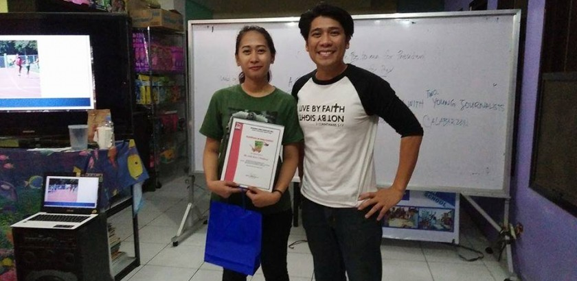

Kariton Klasrum Update
by admin on April 29, 2016
During the Kariton Revolution 2016: Tulakabataan, held at SM Mall of Asia Music Hall, DTC President Efren Peñaflorida, Jr. and Department of Education Undersecretary Mario Deriquito unveiled the future plans for Kariton Classrooms in the Philippines. DTC also launched its Kariton Senior High School Program.
Writing for a Better Tomorrow
by admin on March 19, 2016

Dynamic Teen Company recently had another training to look for new recruits in addition to the MCPRU(Marketing Communications and Public
Relations Unit) team.
The training was held last Sunday, March 27 at Redbuil. The topic was about Photo Captioning and News Writing. The very purpose of the
training was to promote the MCPRU team and to encourage potential writers to hone their skills in the said topics.
The attenders which were composed of DTC and C3 volunteers were very keen to listen to what the speaker had to say. The speaker was none other
than Ms. Julie Ann I. Padasas, a secondary public school teacher and school paper adviser, who gave an exemplary seminar regarding the topic at
hand. The program was very interactive and the attenders surely enjoyed and they undoubtedly picked up a thing or two about how article writing
works.
They were given activities to test their abilities and to practice what they have learned from the seminar.
The participants surely did enjoy as they acquired new knowledge and bonded with their co-volunteers as well. What better way to learn new things
than to learn them with your friends!
Some of the attenders have already been put into the field as they will execute what they have absorbed during the seminar.
MCPRU extends its gratefulness to Ms. Jai for educating the volunteers and bringing inspiration to our aspiring writers.